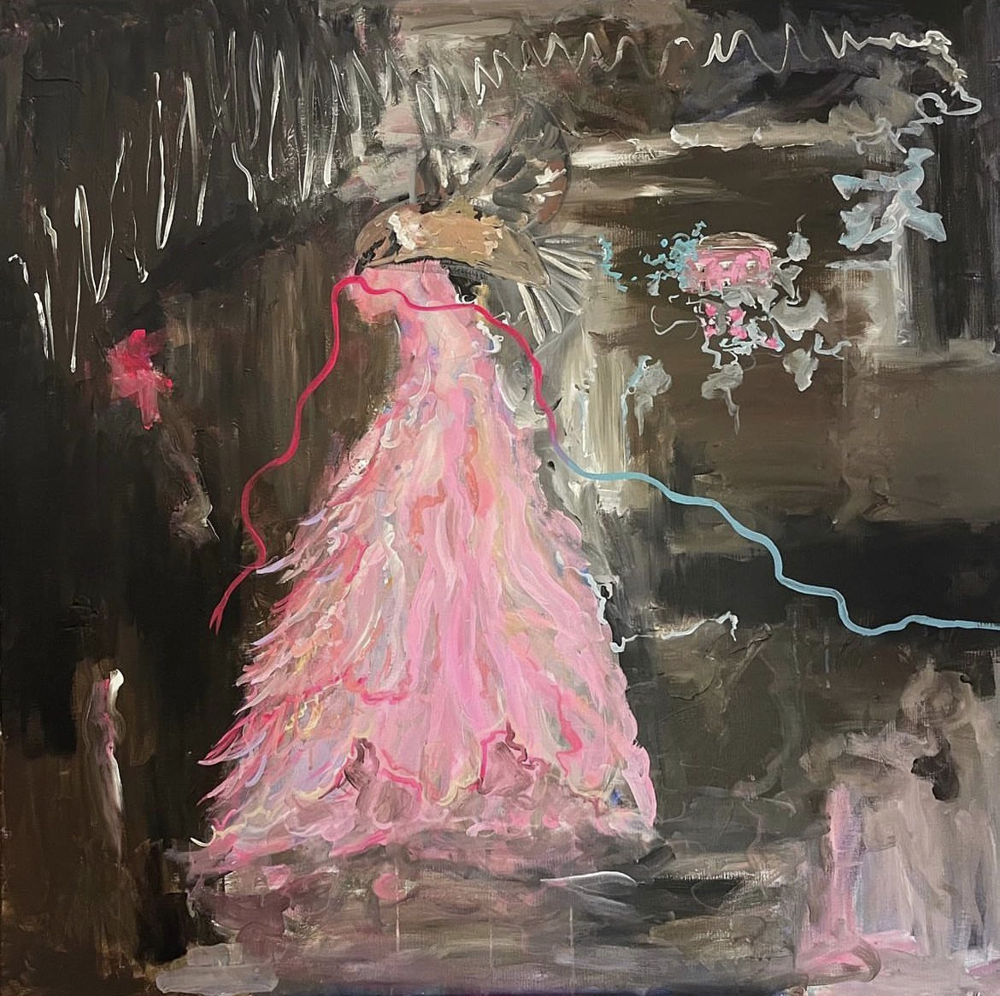
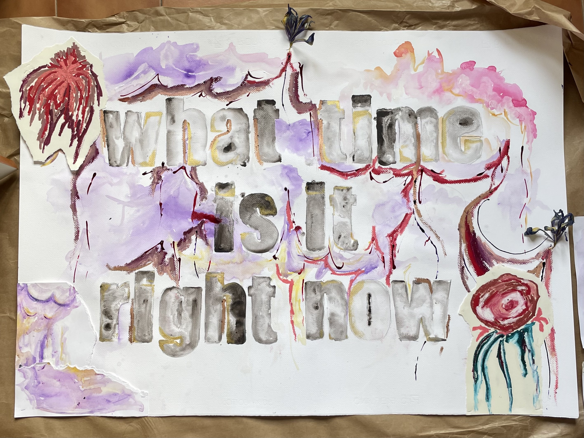
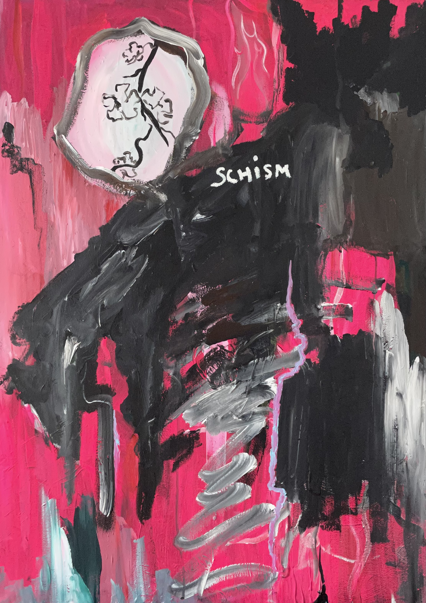
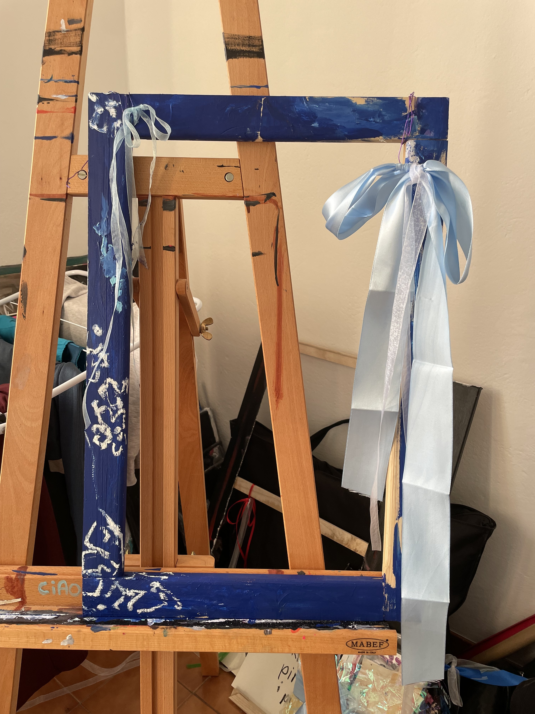
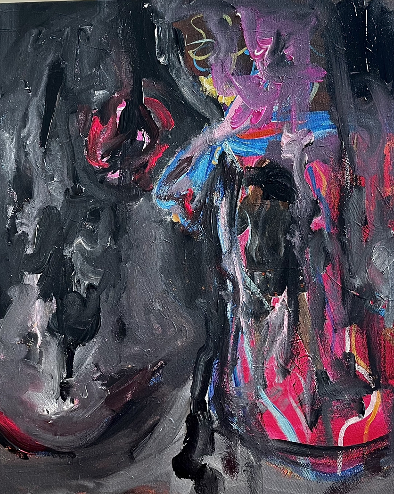
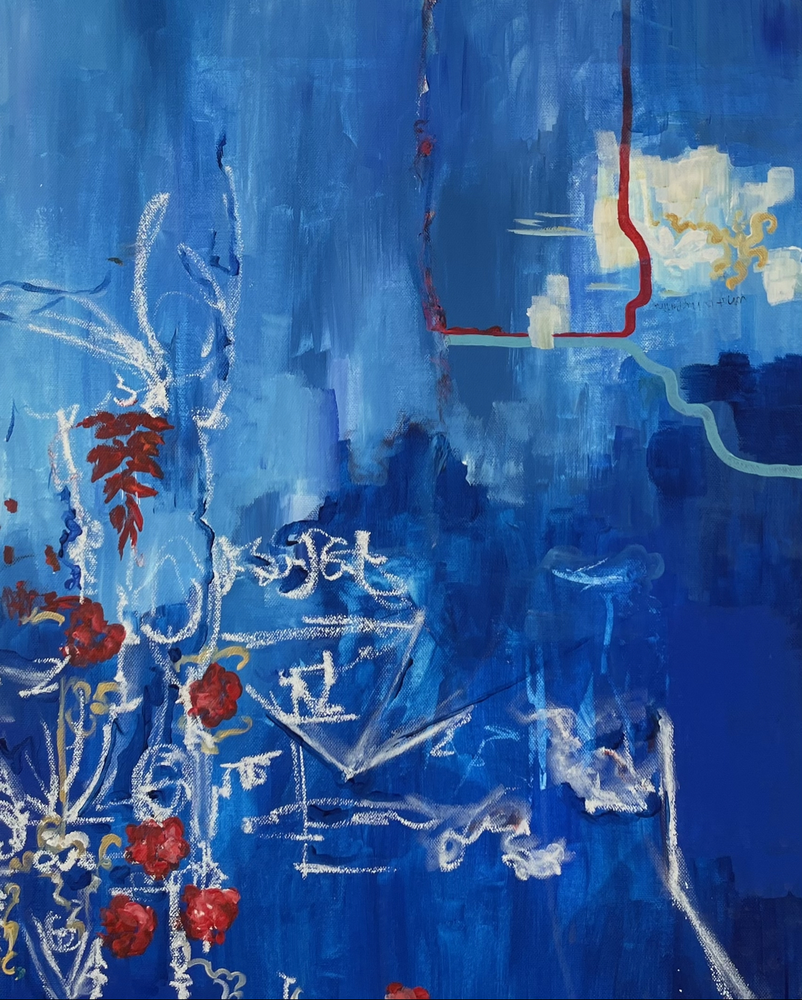
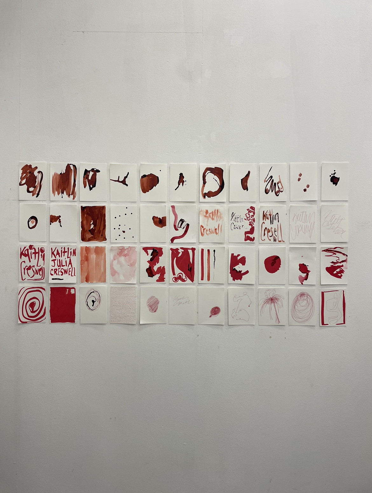

paintings
julia
2022, acrylic on canvas,100x100cm
julia, my middle name, was the beginning of an emotionally-charged painting, one which i have never been able to come close to since then. it is the name i adopted when in need of providing a name for a reservation, or to be called somewhere. giulia is recognizeable in italy, kaitlin is not. this painting was (and is) my own personal masterpiece which i cherish every inch of. every stroke was placed with the utmost of care. the process was joyful, lively, and bold, just as this painting looks.

what time is it right now
2022, watercolor, acrylic, ink, oil pastel, pen, dried flowers, on watercolor paper, 100x80cm
what time is it right now highlights a desperate desire to focus on a decorative theme in my works whilst also wishing to introduce words into my paintings directly. it calls the viewer to question what on earth is truly happening in front of their eyes, not just what they are being told to believe.

schism
2022, acrylic and oil pastel on canvas, 80x100cm
schism was a word i was prompted to make a painting about, so i allowed myself to paint using strong colors and shapes. there is no sense of calm here, it is in a schism.

the utmost of fortune
2022, acrylic and oil pastel on canvas, 100x80cm
the utmost of fortune was a challenge for myself to explicitly write my message onto a painting, using the painting simply as a vessel for words. it served as an embrace for some life lessons i was acquiring.

regalo
2022, acrylic, oil pastel, wire, ribbon, on wooden canvas frame, 30x50cm
regalo, meaning gift in italian, was my first attempt to change my perception of what can be a painting. instead of painting on canvas, i painted and decorated a canvas frame. whatever you look at through the frame is the painting.

layered
2022, acrylic on canvas, 30x50cm
layered was another step in my artistic journey where i felt the need to "prove" something of myself and my abilities to abstract paintings. i had kept this canvas which i painted over time and time again in thick layers of paint until finally one day being fine with leaving it like this. it's a metaphor.

to be loved and to love
2022, acrylic, oil pastel, pen on canvas, 30x50cm
to be loved and to love came about when i was beginning to fall in love with my now partner. the feeling turned me upside down, leading me to draw an abstract representation of the cathedral of his town upside down, decorated with red flowers and spots of gold. this painting was the feeling of butterflies in my stomach.

kaitlin creswell
2024, watercolor, ink, oil pastel on watercolor paper, 84x162,8cm
kaitlin creswell is myself. in this series of paintings and drawings, i faced my greatest source of fear and discomfort, which is blood. i collected materials, especially ink, that resembled blood, and i committed to the process of endlessly creating drawings using this color. there were moments throughout the process i even had to pause, or else i would have passed out. after solely presenting art throughout my life that includes my ideas and beliefs, i decided that i deserved to present one final work that is just me, and what has been inside of me amidst researching other, much more positive topics. this work was a conclusion of my studies, and showed that when all else is over, it is yourself you are left with. and so, i claimed my name.
